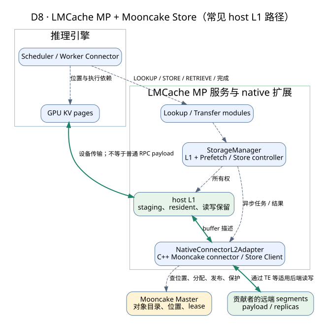
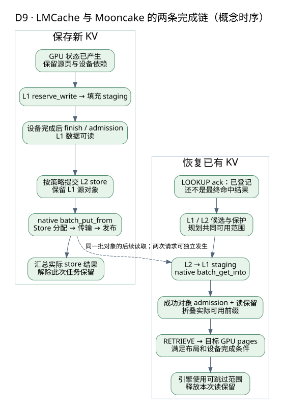

LMCache + Mooncake：从一次保存到下一次恢复
完整源码基线：vLLM f3871c3cbf8a608f7ee833ec4c2c5277f77bee41；LMCache ff9185d419e1ce55c9f4f1ad84a4f4f1f06af7be；Mooncake dd1217b6c461491e7c73ff29b4ffad215e0a9ac0。下文用短 SHA 指代。
本单元 U-KV-LOAD-01 跟踪一条具体加载路径：LMCache MP 模式 + native mooncake_store L2 adapter + Mooncake C++ Store，经主机内存中转（host-staged）恢复 KV。适用范围不包括 legacy YAML remote_url、TENT、GDS、逐层直连 GPU 和其他 connector。实现说明以 LMCache ff9185d、vLLM f3871c3、Mooncake dd1217b 的固定源码为依据，数值例子用于算术推导；设计建议与待核问题另作标识。尚无 GPU/RDMA 实测和真实读者试读数据。
阅读前先回顾四个概念。本例的 KV Cache 包含每层、每个 token 对应的 K、V 张量，GPU 上的 block（页）由引擎的 block manager 管理。前缀复用要求模型状态、token 位置和张量表示相互兼容，并形成连续前缀；不同切分或布局之间能否转换，取决于接入实现。异步拷贝提交后还要等待完成，CUDA 用 event（事件）表达设备依赖。RDMA 单边写的数据操作不经过远端 CPU，因此判断写入是否停止，需要传输侧的完成或隔离证据，而不是本地等待超时这一信号。
理解这条链路，关键是知道每一种“完成”究竟确认了什么。LOOKUP 的确认应答（ack）表示任务已登记；L1 对象可读、L2 保存结果、远端读取结果检查、设备完成事件与调度器上报，则分别回答后续阶段的问题。容量预算、首 token 时延（TTFT）和内存回收时机，都要依据对应阶段的信号判断。
贯穿本页的基准请求 R（S0-v1）：一次命中共享前缀的请求，前缀长度 32,768 token，使用同构全注意力模型：80 层、8 个 KV 头、head_dim = 128、BF16（每元素 2 B），部署为 TP8。后面每一节都回到 R：第 1–2 节说 R 的数据分别落在哪个资源上，第 3–4 节说 R 的保存与恢复各自在哪一步才算数，第 7 节给 R 的字节与时间下界。
下文用三个符号区分资源，跟踪数据从哪里来、由谁持有、到哪里去：
- S：远端 Mooncake Store 里的对象（含其副本与读租约）。
- H：LMCache 在 host（主机）内存中的 L1 对象，处于 staging（写入暂存）或 resident（已发布）状态，也是 Transfer Engine 注册并读写的内存。
- B：vLLM 为请求分配的目的 GPU block 集合。
本页按两个主要阶段记账：TE 段（Transfer Engine 从 S 读到 H）与 H2D 段（CUDA stream 把 H 拷进 B）；后端内部的暂存、分块和额外复制需另按实际路径核算。网卡在本路径里不直接写 B。两段各有完成条件，不能用一个阶段的清理状态证明另一个阶段已结束。
1. 两者分别补哪块能力
把 R 的 10 GiB KV 想成一堆散落的 GPU 页。单独一个对象存储回答不了：从哪些页读、按什么格式组织、哪个 key 对应哪段前缀、恢复到哪些新页、允许少算多少 token。
| 层次 | 核心职责 | 不能单独保证 |
|---|---|---|
| 引擎与 Connector | 请求进度、页位置（B）、可跳过范围、设备执行依赖 | 远端对象 S 持久存在 |
| LMCache | chunk/group/key、H 的 staging 与 resident、预取、保存与读写保留 | 所有部署天然兼容同一模型表示 |
| native adapter | 转换 key/buffer，提交任务，汇总完成结果 | 跨所有对象的事务、任意后端的强锁 |
| Mooncake Store | 对象目录、分配、发布、副本、租约与回收（S） | token 前缀的计算语义 |
| Transfer Engine | 注册地址、segment、READ/WRITE 与完成状态（TE 段） | 上层对象发布，以及 B 上的 GPU attention 可消费 |
一个容易被当成"常识"的说法需要收窄：这条路径上 R 的目的 GPU 块 B 由 vLLM 分配，LMCache 只接收已分配的 block 列表并追加新增部分，偏移量用于避开 APC 已覆盖的范围以免覆写。这是本路径的事实，不能推广成"LMCache 从不分配 GPU 内存"。
2. 部署与两条通路

B (GPU KV) ← H2D ← H (LMCache host L1) ← TE READ ← S (远端 Store 对象)
LMCache 的 L1 在该配置中是 host 内存（H），L2 是外部后端（S）；引擎 GPU（B）不在这个 L1/L2 命名体系里。HiCache 等系统采用不同层级命名，面试和设计文档中最好直接写 GPU、host、远端。
控制消息走 IPC/RPC，设备 payload 不一定逐字节走同一控制消息；Master 管对象元数据，不承载所有 payload 转发。这里也不能宣称 GDR：即使底层支持 GPU 内存，本 host-staged 集成仍要按实际路径计算 D2H/H2D。
2.1 资源清单与偏序：谁持有什么、何时可用、何时可释放
下表按资源列出持有者、使用条件和释放条件，事件的先后依赖见表后说明。最后一列补充连接不健康（unhealthy）或其他异常发生时，哪些正常路径条件不再适用。
| # | 事件 | 谁持有什么资源 | 何时允许使用 | 何时允许释放 | unhealthy 分支边界 |
|---|---|---|---|---|---|
| 1 | 调度器 allocate_slots 后调 update_state_after_alloc，R 进入 WAITING_FOR_REMOTE_KVS | vLLM 持有 B；LMCache 只拿到 block 列表 | attention 不得读 B | R 被取消或结束后，调度器在对应分支释放 B；正常成功的 R 接着用 B 做计算，上报接收完成不等于立刻还块 | B 被标 error_block_ids 后同样会上报，但"已上报"不证明 H2D 段或远端写入已终止 |
| 2 | 异步 LOOKUP 发出，server 返回 ack | server 持有一条登记中的查询任务 | ack 只说明任务已登记，不是命中 | pending 转终态，或请求取消后清理 bookkeeping | 链路不健康时 futures 被清空，pending 直接转为失败 |
| 3 | TE 段完成，对象进入 H（L1 resident） | H 上按声明的 reader 数取得带 TTL 的本地读保留 | RETRIEVE 阶段按读保留做 unsafe_read | 每个 reader 完成 retrieve 释放一份保留；读锁默认 TTL 300 s（写锁 600 s，均可配），保留不是无期限的 | 预取失败的 key 不进入 resident，命中 bitmap 对应位为 0 |
| 4 | S 上的对象被读租约保护 | Store 侧持有一个有 deadline 的读租约 | 覆盖本次远端读取直到结果检查：结果检查时若判定已过期，该结果不得按成功使用 | deadline 过期后 S 可被回收 | 进程崩溃时租约不保证数据仍在；租约不追溯作废此前已成功取回并校验的 H 副本 |
| 5 | H2D 段：校验目的块数量 → 等 worker producer event → H2D → record completion event | CUDA stream 持有 B 与 H 中的源 buffer | GPU 可消费 = 本次确有设备工作时，completion event 已完成 且结果为成功 | completion event 完成后，H2D 段对 H 的这次读取结束 | 不等设备事件直接上报时，completion event 可能根本没被 record |
| 6 | TE 批量任务等待阈值到点 | 传输层仍持有 H 侧源/目的 buffers | — | 句柄释放 ≠ 后台清理完成 ≠ 调用者内存可复用，这是三个事件 | 超时只标 TRANSFER_FAIL，文档明确不取消传输；这是逻辑终态，不是物理任务终止 |
偏序（只列因果必需的先后，不构造全序）：LOOKUP 登记 ≺ 预取结果折叠；S 的读租约窗口覆盖本次远端读取直到结果检查 ≺ 该结果可按成功使用；TE 段成功 ≺ H 成为 resident 并带读保留；vLLM 分配 B ≺ 提交 H2D；worker producer event ≺ H2D ≺ record completion event；（有设备工作时）completion event 完成 ∧ 结果成功 ≺ attention 读 B。回收侧另有两条：H 上的最后一次访问终止 ≺ H 可复用；B 上的最后一次写终止 ∧ R 不再在 B 上计算 ≺ B 可复用。
有先后依赖，不等于完成条件可以替代：正常加载先把数据取到 H，再提交 H2D；但早先 TE 侧的 freeBatchID／清理返回值不能证明之后针对 B 的 CUDA 工作已经结束。必须分别检查对应地址范围的实际访问者与完成证据。
3. 一次保存：三次“完成”不能混为一谈

3.1 引擎到 L1
- 引擎确定可保存的 token 范围、GPU block 与设备依赖，Connector 传递相应信息。
- LMCache 用对象 key 和 writer tag 预留 H 的 staging。地址分配成功时数据还不可读。
- 完成相应的设备数据传输和事件依赖。
- L1 finish/admission 把完整数据发布为 resident；有些路径同时取得读保留，防止发布与后续使用之间被淘汰。
同 key 的不同 writer tag 可各有 staging；第一个有效发布者成为 resident。不要把 writer tag、object key 和 L1 owner ID 当作同一种标识。
3.2 L1 到 Mooncake
- 保存策略决定哪些对象送往哪些 L2 adapter；任务期间 H 上的源对象必须保持有效。
NativeConnectorL2Adapter.submit_store_task转换对象 key 与 memory view，向 native client 提交批量 set，并登记 future/task 对应关系。- C++ connector 的批量 set 路径使用
batch_put_from；Store 层再执行分配、传输与发布协议。 - native 的结果经 adapter 汇总成 L2 store 结果。H 作为源缓冲区，须保留到本次相关传输不再访问它；失败或超时结果是否具有同等释放语义，还需核对保存路径的保活屏障。本页没有把任意 L2 终态当作 H 的释放许可。
所以至少有 GPU 数据已产生、H 可读、S 保存完成 三种事件。是否必须等 S 完成才结束用户请求，取决于集成策略，不能从图里推出统一答案。
3.3 Store 内部的发布协议
单对象 Client::Put 可沿 PutStart → 数据写入 → PutEnd/PutRevoke 理解；批量 API 有独立的逐对象状态和 finalize 流程，不能把单对象函数图当成批量调用栈。PutStart 拿到位置不代表对象已可读；申请 N 个副本也不等于已有 N 份跨主机完整副本。
本基线这条 Put 路径遇到同 key 已存在时的行为要限定着说：PutStart 返回 OBJECT_ALREADY_EXISTS 时，先尝试 healDanglingLocalDiskReplica(key)；若其结果为 kEvicted，会再调用一次 PutStart 重试。只有在修复与可能的重试之后仍然返回 OBJECT_ALREADY_EXISTS 的分支，才直接当作成功返回且不执行本次覆盖。所以正确的记法是"修复/重试后仍冲突则视为成功且不覆盖"，而不是"同 key 一律提前返回成功"，更不能笼统说"系统永不支持更新"。批量写部分成功时，整批失败也不等于已成功的对象都被回滚。
还有一条写者侧的安全规则：Store 返回失败并不保证被写入的那一侧 buffer 未被修改。失败只说明这次调用没能证明成功，不说明物理访问已经停止。因此不允许在传输可能仍在途时对该 buffer 清零、memset 或拿去复用——这既不是"数据一定已损坏"，也不是"数据一定干净"，而是状态未定。注意边界：这条规则说的是写入目的侧；不能反过来推出"只读的源侧也一定被修改过"。
4. 一次恢复：lookup ack 不等于命中
R 的正常路径按这个顺序走：早发 LOOKUP（可在请求入队时就提交）→ 预取（TE 段：S→H）与各 group/rank 结果折叠 → vLLM 分配 B → RETRIEVE（H2D 段：H→B）→ 事件与结果检查 → 调度器消费 B 做 prefill/decode。注意 S 的读租约在第二步的远端读取结果检查之前就要有效，不是等 H 变成 resident 之后才建立。
4.1 查找与预取
- 引擎侧异步提交 LOOKUP，server 的 ack 只表示任务已登记。
- LMCache 在 H 上观察并保留已有对象，在 S 上查询候选；storage manager 与预取控制器根据合并信息规划来源。
- 要从远端取的对象先获得 H 的 staging，native load 路径用
batch_get_into写入调用方 buffer。S→H 属于预取阶段。 - 成功且被保留的对象进入 H 的 resident，形成结果 bitmap；最终命中还要按各 group/rank 的语义折叠。
- 随后的 RETRIEVE 从已持读保留的 H 对象取数据，这个分支不会临时再走一次远端 GET。
预取成功后，H 由本地读保留保护，S 由远端读租约保护。H 的 num_kv_readers 是 key 中声明的消费者数量；require_num_kv_readers 要求该值 ≥ 1，值为 0 时拒绝。server 按声明数量预留读锁，每个 reader 完成 retrieve 后释放一把。这些锁有 TTL：读锁默认 300 s，写锁默认 600 s，可通过 --l1-read-ttl-seconds / --l1-write-ttl-seconds 配置。
读者数量和 TTL 共同限定 H 的保留范围。源码注释提示，少算读者会在拷贝途中解除固定；多算也只能保留到 TTL，而不是无限期持有。过期后的续期、回收与失败处理分支尚未完整核对，单凭 TTL 配置不足以认定发生了 use-after-free。
S 侧：Mooncake 读租约是远端 Store 的一个时间窗口，默认 TTL （可配置），由单调推进的 deadline 维护；它不是引用计数，不随本地读者增减，也不能在远端进程崩溃后保住数据。两种情形必须分开：（甲）本次读取在结果检查时租约已过期——成功项被转成 LEASE_EXPIRED，这个结果不得按成功使用；（乙）读取已成功完成、校验通过，之后原租约才到期——此时 H 上的副本是独立副本，其有效性由 H 的本地保留、对象身份与设备依赖决定，不会被原租约的到期追溯作废。
读保留的份数取决于实际并行策略，即 TP、PP、DCP 的组合及消费方式；仅知道 TP=4，还不足以确定读者数量。
4.2 L1 到 GPU
H 就绪后，还需要把数据送入 B。H2D 路径先校验目的块数量，再等待 worker 侧的 producer event（生产者事件），随后执行拷贝并记录 completion event（完成事件）。返回的 DeviceMessagingFuture 包含两部分：raw future 承载成功或失败的结果，设备事件句柄用于判断相应的设备工作是否完成。
调用方结合结果与事件判断本次搬运，四种组合如下：
校验失败可以发生在拷贝之前。例如，服务端找不到已注册的传输上下文时，会返回空事件句柄与 false；目的块数量不足时，也会返回失败。分析这类结果时，需要先区分是否提交过设备工作。
| 结果 = 成功 | 结果 = 失败 | |
|---|---|---|
| 非空设备事件 | 必须等该 event 完成，再结合成功结果与覆盖范围判断 B 可消费；有事件本身不证明有效载荷已搬完 | 整体失败，不得消费错误范围；有些校验失败分支仅记录事件而未执行 H2D |
| 空事件句柄 | 接口语义推演：空句柄表示本次未提交设备工作，仍需按结果与覆盖范围判断。本包所列 RETRIEVE 函数没有展示“空句柄且成功”的返回分支，这里不将其当成已实现的空操作案例 | 明确失败，B 中对应块按坏块处理 |
能否使用本次数据，要结合返回结果、覆盖范围和设备工作状态判断。有非空事件时，事件完成是必要条件；没有事件时，依据结果与覆盖范围判断。句柄是否为空，单独看都不能决定数据能否使用。
正常上报路径先 query，再取 result（传入的 timeout 参数为 ）。该参数约束底层 raw future 的等待，不是设备事件等待的硬上限；正常上报分支在调用前已经通过 query 检查完成。result 为 false 时，将对应块标为错误。LMCache 适配器用局部集合 finished_retrieves 汇总已收尾的请求，经 connector 的 get_finished 输出后，vLLM 调度器以 finished_recving 接收。这是同一条上报在不同层的名称，不是两次独立 RPC。读取 finished_recving 时还要检查失败与坏块信息，才能区分成功和失败的收尾。
这条 MP 路径的 wait_for_layer_load 是空实现；RETRIEVE 的设备依赖按上面的事件与结果处理，不沿用 STORE 侧的逐层行为。
4.3 取消与连接异常怎样收尾
这是两条完全不同的分支，结论也不同：
- 健康链路下的取消（延迟释放）：R 在
WAITING_FOR_REMOTE_KVS、尚未上报时被取消，调度器走 delay_free_blocks——把 B 的释放推迟到接收上报之后；LMCache 侧清理 bookkeeping。注意：源码提供的是延迟回收的记账路径，没有提供物理 DMA 取消的证明。所以这条路径的安全性建立在"链路健康、接收最终会上报"这个前提上。还要分清被取消的是"用户断连"还是"链路不健康"，两者走的分支不同。 - unhealthy 排空上报：链路判定不健康时，不等设备事件，直接标
error_block_ids与failed_request_ids，清空 retrieve futures，并把这批请求放进finished_retrieves上报。"清空 futures 并报坏块"是源码事实；但"已上报"不能自动画等号为"对 B 的写入已终止"。
异常回收还有两个待核接口。当前引用的源码片段尚不足以证明其完整安全条件，也没有据此确认漏洞：
- unhealthy 之后的 H2D 隔离：排空上报后，本地是否还可能有已提交的 H2D 工作写 B，摘录没有给出隔离或确认屏障。
- 预取失败时 H 的回收：
prefetch_controller.py对失败 key 调用l1_manager.finish_write_and_delete，而 TE 的等待超时可能只是逻辑失败（文档明确不取消传输）。这两者之间是否存在物理完成或 buffer 保活屏障，本轮摘录无法证明。
传输层也要分清三个不同动作：保护（读保留、租约，让数据在窗口内有效）、等待（本地阻塞到某个阈值，到点只标 TRANSFER_FAIL，文档明确"不取消传输，保持操作和 buffers 直到后续完成"）、发布（把对象从 staging 变成别人可读）。等待超时既不保护也不发布，更不撤销。
相应地，释放句柄时对未结束任务会返回 BatchBusy；上层多传输实现可以接管延迟清理并返回 BatchCleanupDeferred，其注释明确写着句柄已失效但传输仍可能持有 buffers。这两个返回值都不证明调用者的 H 内存可以安全复用，更和 B 无关。反过来也要克制：仅凭"析构里忽略了返回值"也不能断定所有调用链都发生了 use-after-free。
4.4 部分命中怎样影响可复用范围
本例假定需要完整前缀的全注意力组，并按 prefix 策略恢复。取 R 的前 1,024 token，chunk = 256（4 个 chunk）。H 上已有 chunk0，S 上有 chunk0–2，chunk3 缺失。若 chunk1 的 TE 段失败、chunk2 成功，连续前缀仍只能使用 chunk0，不能报告“拿到两个 chunk 所以跳过 512 token”。滑动窗口组按各自必需窗口与其他组共同折叠，不能直接套用此例；逻辑上的可跳过前缀与每组必须持有的历史数据范围是两件事。
再看跨 rank 的情况：R 在 TP8 下，rank0 有 3 个 chunk，rank1 只有 2 个，就不能按 rank0 的结果让所有 GPU 跳过 3 个 chunk。因此，分析一次命中需要依次确认对象是否加载成功、这些对象共同覆盖的有效范围，以及引擎最终允许跳过的计算范围。
5. 三层保护，三个不同保证
| 保护 | 在当前链路中的含义 | 不能推导出的保证 |
|---|---|---|
LMCache L1 读写保留（按 num_kv_readers 声明数预留的 TTL 锁） | 进程内按 key 预留读/写锁，管 H 的发布与使用；读锁默认 300 s、写锁默认 600 s | 无期限持有 H；也不保证 S 上的副本还在 |
| NativeConnectorL2Adapter 锁计数 | 客户端按 key 本地计数，unlock 减计数 | 自动持有远端跨客户端强锁 |
| Mooncake 读租约（默认 TTL ，可配） | Store 在时间窗口内保护适用读取，直到该次读取的结果检查 | 覆盖任意长排队、节点故障和所有设备任务；也不追溯作废已成功取回的 H 副本 |
lookup_and_lock 是上层接口名；当前 native adapter 的查询实际提交 batch exists，并在客户端记录命中的锁计数，submit_unlock 也只减本地计数。exists/副本查询可影响 Store 读租约，但本地计数不等于无期限远端锁。
Store 侧返回值也要分层读：只有 result 为 OK 的分支才做 checksum；即便结果成功，若在结果检查时判定租约已过期也会转为 LEASE_EXPIRED。而 future 的错误返回可能只是本地等待失败，所以"future.get 返回了"不证明物理传输已完成。
5.1 从取消到复用：怎样补齐回收契约
前面列出了固定源码能确认的边界。下面给出一种工程设计推演，说明缺少回收确认时需要补什么接口；它不是对当前实现已经具备这些能力的声明。目标是让新请求继续运行，同时保住旧地址，直到相关访问真正结束。
先按地址范围建立访问清单：H 可能被 TE 写入，也可能被 H2D 读取；B 可能被 H2D 写入，还会被当前请求的 GPU 计算使用。清单应覆盖“已获准但尚未提交”的工作，以及已经提交的工作。关闭旧会话与登记新访问之间需要同步：否则可能出现控制器看到在途数为零并回收地址，另一个线程随后才提交旧操作的竞争。
- 关闭新访问入口。阻止旧会话继续取得该地址的提交资格，并处理已经取得资格但尚未提交的工作。只从调度器请求表删除 R，还没有完成服务端和设备提交方的这一交接。
- 隔离旧地址，给新请求另一块内存。H 和 B 分别保留；若有容量，让 R2 使用不与旧范围重叠的地址。换请求 ID、块编号或软件 epoch 本身，不能阻止已提交工作访问原地址。隔离占用也要计入容量预算，空间不足时降低新加载的准入或选择重算。
- 收集与范围匹配的完成证据。H 要等相关 TE 访问及全部 H2D 读取结束；B 要等相关 H2D 与原请求的 GPU 使用结束。一个 CUDA 事件只能覆盖其依赖关系所包含的工作，不能证明其他流或后续提交也已结束。TE 返回延迟清理状态时，接口还需要给出“清理方已不再访问或持有该范围”的确认；当前摘录没有给出通用的此类通知接口。
- 由资源所有者归还。所有相关访问结束且不会再产生旧访问后，才能解除隔离、归还缓存或块池。对象失败决定它不能被消费，访问生命周期决定它何时能回收；两者分别处理。
例如，某次取消发生时，TE 对 H 的写入已经完成，但从 H 到 B 的拷贝仍在运行。此时 H 是拷贝源，B 是拷贝目的地，两个范围都要保留；仅等待 TE 会漏掉对 H 的设备读取，仅看 H 的读锁数量又会漏掉对 B 的设备写入。若只能确认逻辑失败，接口就还没有给出允许复用的证据。
验证时，记录“取消请求”“接收流程收尾”“接口宣称可复用”三个独立时刻，并对提交资格交接、设备提交和完成通知之间的竞争窗口注入延迟。在使用测试缓冲区的隔离实验中，可在被测接口宣称可复用后写入新模式，再检查旧任务是否改写它；发现一次迟到写就足以反驳该回收保证。若接口没有给出可复用确认，不能拿接收上报时刻替代。有限次、有限时长未观察到错误，只支持已测条件，还需要源码责任链与同步语义的论证；它不证明所有异步交错都安全。
5.2 异步任务怎样脱离调用方缓冲区
核对访问清单时，还要看后端是否把 H 交给其他任务。Mooncake 的一个具体例子是启用 hot cache 后的 ProcessSlicesAsync：它会调用 LocalHotCacheHandler::SubmitPutTask。需要写入新热点块时，后者先用同步 std::memcpy 把调用方 slice 复制到 hot cache 取得的块中，再将任务放进队列。
HotCachePutTask 保存的是热点块、长度、key 与发布令牌，没有保存原始 slice.ptr；工作线程随后处理该热点块。因而在这条分支中，后台任务使用的是已复制的数据，并不继续读取调用方 H。这个例子说明：判断缓冲区寿命，要追踪何时复制、任务保存了哪个地址、后台实际访问谁，不能只凭函数名里的 Async 推断。这里核对的是地址交接，数据可消费性仍要按返回结果及租约检查判断。
6. 原生扩展与 RDMA 前提
本基线 mooncake_store_l2_adapter.py 是配置与工厂入口，最终创建通用 NativeConnectorL2Adapter，native client 由 Mooncake C++ connector 实现。
- LMCache 的 Mooncake native 扩展有独立构建前提；装了 Mooncake Python 包不等于该扩展存在。
- 工厂自己消费
type、num_workers（默认 4）、per_op_workers、eviction；其余非 None 的键被转成字符串原样交给 Mooncake。LMCache 不拒绝未知键，既不代表 Mooncake 一定接受，也不代表拼错一定会报错——这是最常见的"配置看着生效其实没生效"来源。 protocol == "rdma"时必须提供ptr != 0、size > 0的 L1 描述符，否则抛ValueError。--l1-use-lazy默认为 True，可用--no-l1-use-lazy关闭；Store 文档建议预先分配。但不能说"没加这个 flag RDMA 就必定失败"。- Mooncake 侧要核对拼写的字段有
local_hostname、metadata_server、master_server_addr、protocol、local_buffer_size、global_segment_size。默认 global/local 各为 ，protocol默认 tcp。非 embedded master 模式下local_hostname/metadata_server不能为空。默认值不是推荐值——见 7.1 末尾对 R 的量级对比。 - 线程池可按 lookup/retrieve/store/delete 分，但加线程不自动增加链路、内存或 H2D 带宽。
关于版本：LMCache 兼容性文档确实写了 vLLM >= 0.20.0，并称默认仍走内置 connector；而当前固定的 vLLM 解析实现在未强制走上游 MP 时会优先尝试外部 LMCache 导入，ImportError 才回退。这是文档描述与当前实现范围的差异，既不能据此断言历史最低兼容版本，也不能宣称这两个提交已实测兼容。部署教程应同时给出固定基线和解析日志。
7. 资源预算与加载成本
引擎活跃 GPU KV（B）
+ LMCache host resident（H）
+ LMCache staging 与尚未完成 lookup 的最坏加载预算
+ Mooncake 贡献的 global segment（S 的本机份额）
+ Mooncake 本地 buffer / 后端暂存
+ 元数据、注册资源、碎片与故障恢复余量
这些不一定独立分配，也不一定可复用，必须按实际地址范围和所有者去重。预取准入也不能只看任务个数：_can_admit_new_prefetch 同时看 staging 字节加 lookup 字节是否低于 inflight_watermark × 容量，以及空闲字节减 lookup 字节是否还够这次请求。但它有一个明确的例外：当没有在途请求时直接返回 True，注释写明这是为了不让"永远放不下的请求"堵住队列。所以准入通过不是内存已预留成功的保证——例如容量 1 GiB、首请求预计加载 2 GiB 时仍会放行，后续分配失败如何处理需另行核对。
7.1 R（S0）的字节与线速下界
R 的参数：80 层，8 个 KV 头，head_dim = 128，BF16 每元素 2 B，32,768 token。每 token 字节数（K 与 V 各一份）：
总量：
仅在"按头均匀 TP8、无复制、无填充、无元数据"这组前提下，每 rank 为 。
单条 400 Gbit/s 裸线速换算（分母里的 8 是 ， 是 ）：
假设甲：整份 10 GiB 走一条共享的 400 Gbit/s 链路，时间下界为：
假设乙：每个 rank 有独立且无共享瓶颈的 400 Gbit/s 链路，单 rank 1.25 GiB 的下界为 。甲、乙是互斥的两种拓扑假设，两个数字不能混在同一张预算表里；而且都是理论下界，不是实测，本页也不提供任何"乘 90% 效率"的通用折扣。
顺带做一个纯算术的量级对比：单 rank 的 ，而 global_segment_size/local_buffer_size 的默认值是 ，相差 倍。这只说明默认值不足以一次性承载 R 的一个 rank 份额，不构成对分块/流式搬运行为的任何结论。
7.2 一个独立的 1 GiB 微型例子：串行 / 理想 / 重算
下面是一个与 R 无关的独立算例，只用来说明"盈亏比较要盯同一个可消费终点"。它描述的是假想的两种实现，不表示当前实现已具备分块流水能力。前提：单请求 payload 为 1 GiB；网络有效带宽 20 GiB/s；H2D 有效带宽 25 GiB/s；另有不可重叠的固定开销 3 ms（查找、提交、事件同步等）；同口径的全量重算耗时 70 ms。
网络段与 H2D 段各自的时间：
串行（先整段下载到 H，再整段 H2D 到 B）：
理想分块流水、无资源争用（成立条件：网络路径与 H2D 路径物理独立、不共享 PCIe/内存带宽瓶颈，分块足够细使流水的填充与排空可忽略）：
与重算的 相比：串行 93 ms 劣于重算，理想流水 53 ms 优于重算。同一条链路，仅因为"是否真的重叠"就跨过了盈亏线。
两个必须声明的口径前提：① 三者比较的终点必须相同——都终止于"B 可消费"，即（有设备工作时）completion event 已完成且结果为成功，而不是"H 已就绪"或"future 已返回"；② 若网络与 H2D 共享同一瓶颈资源， 模型不成立，实际会向串行方向退化——退化程度取决于争用份额，不必然恰好等于两段之和。
8. 从现象定位到协议层
| 现象 | 优先区分 | 证据 |
|---|---|---|
| 查到很多，实际少算很少 | 候选命中、加载成功、group/rank 折叠、引擎边界 | 各阶段 token/bitmap 与完成记录 |
| L2 带宽高，TTFT 没下降 | 排队、staging、H2D、布局、同步；是否真重叠 | 分段 trace、字节数、队列深度 |
| 偶发输出错误 | key/布局不兼容、提前发布、旧页复用、结果检查时租约已过期仍被消费 | namespace、对象身份、页代际、事件依赖 |
| 取消后内存不降 | H 与 B 分开看；延迟释放 vs 在途任务；BatchBusy/BatchCleanupDeferred 的三个事件 | owner、引用、task/future 与结束事件 |
| 缓存故障拖垮 GPU | 重算放大、无界重试、准入不足（含首请求放行例外） | miss 原因、回源速率、GPU 队列和 goodput |
| Store 有对象但无法加载 | 注册/位置过期、租约、部分失败、checksum 分支 | Store 返回值、buffer 范围、加载结果 |
先还原状态和时间线，再判断是配置问题、实现缺陷还是设计能力不足。不要只因为名字里有 lock、zero-copy、async 就把契约当成已验证保证。
学完自检
- 状态：对 R 的任一时刻，能分别说出 S、H、B 的持有者与"现在能不能用"的判据。
- 生命周期：能对同一地址范围分别给出"最后一次访问已终止"的证据要求，并区分不可消费与不可回收——失败的数据不可消费，但全部访问终止后仍可释放；成功完成的活跃请求数据可消费，却不能因此立刻还 B。
- 盈亏：能以统一的"B 可消费"终点比较加载与重算，并说清 模型成立的前提。
- 未知结果：遇到逻辑失败、等待超时、空事件句柄时，能说出哪些属于状态未定，而不是把它当成已知结论。
- 证据：能为实现结论给出仓库、提交、文件和行号，并将模型推导与未核问题分别标明。
练习题
三题的数值与前提都写在题干里，概念依据见正文第 2.1、4.1、4.2、4.3、7.2 节。
题 1（算账：带宽降一半）
沿用 7.2 的独立微型例子：payload 1 GiB，H2D 有效带宽 25 GiB/s，不可重叠固定开销 3 ms，同口径全量重算 70 ms。现在网络有效带宽从 20 GiB/s 降到 10 GiB/s，其他条件不变。
(a) 分别算出串行与理想无争用流水两种实现下的端到端时间，单位 ms，写出算式。
(b) 以"B 可消费"为统一终点，判断这两种实现相对 70 ms 重算是赚还是亏，并给出依据。
(c) 如果实测发现理想流水的实际时间明显大于你算出的值，列出两个你会优先排查的结构性原因（不是"机器慢"这类回答）。
题 2（资源推演：取消之后谁还可能在写）
考察 R 的两个不同阶段，不把它们当作同一时刻：快照 A 位于 LOOKUP 预取阶段，S→H 已提交，H 仍为 staging，尚未据此分配目的 GPU 块；快照 B 位于预取成功之后，H 已成为带读保留的 resident，vLLM 已分配 B，R 处于 WAITING_FOR_REMOTE_KVS，H→B 是否已经提交需查记录。分别考虑 A 的传输等待超时，以及 B 中用户断连取消 R。给定事实：① B 中尚未上报接收完成时调度器延迟释放；② A 中 TE 等待阈值到点只标 TRANSFER_FAIL，不取消传输；③ 释放 TE 批句柄可能返回 BatchBusy 或 BatchCleanupDeferred，后者表示句柄已失效但传输仍可能持有 buffers；④ 已提交的 H2D 由 CUDA stream 执行，并以相应 completion event 跟踪完成；⑤ 预取失败时控制器对失败 key 调用 finish_write_and_delete。
(a) 分别针对 H 和 B：列出可能的最后一次访问者是谁，以及要判定"该地址范围不再有新访问且已有访问已终止"，各自需要什么证据。不要求把两者排成一个全序。
(b) 下列说法哪些不成立？逐条说明理由：
①「TE 批句柄已释放 ⇒ B 可以安全复用」；
②「等待超时返回 TRANSFER_FAIL ⇒ 物理传输已终止」；
③「R 的加载成功并上报接收完成，但请求还要继续计算 ⇒ 可以立刻把 B 还给新请求 R2」；
④「H 的读保留还没释放完 ⇒ H 一定不会被回收」。
(c) 说明为什么"取消后先把 B（或 H）清零"不是安全补救；再给出一种不依赖硬件取消、也能让 R2 尽快跑起来的工程策略，并说清你用什么时刻作为旧地址可复用的边界。
题 3（证据辨析：2 ms 的完成上报）
监控记录到某批请求的接收完成上报，但尚未确定所走分支；上报时刻距提交仅 2 ms，远低于平时，同时 error_block_ids 非空。
(a) 仅凭这两个观测量，能否断定链路被判定为 unhealthy？给出至少两个与观测一致的其他解释。
(b) 要把这批请求归到具体分支，你还需要哪些证据？
(c) 说明为何仅凭“接收完成已上报”不能保证 B 可消费、旧访问已终止、B 可立即复用。各给依据。
(d) 若要把"旧会话不会再写 B"从待核项变成可断言的保证，需要哪些条件组合，以及用什么可证伪的方式验收？
参考解答与自检要点（先独立做完再展开）
题 1
(a) 网络段 ，H2D 段仍为 40 ms。
串行：；理想流水：。
(b) 两种实现都比重算慢：143 ms 与 103 ms 均大于 70 ms。网络单段就需要 100 ms，已经超过重算耗时，因此仅靠两段重叠无法改变选择。延伸思考：在本题假设下，重叠最多省下较小段的时长，即 40 ms；当某一段单独超过重算时间时，流水化仍无法使加载更快。
(c) 可接受的答案包括：网络与 H2D 共享同一瓶颈（同一 PCIe root complex / host 内存带宽），使 模型向串行退化；分块粒度太粗导致填充与排空占比不可忽略（7.2 已把"可忽略"写成前提，所以这是前提不成立而非教材遗漏）；staging 容量不足，下载段被迫等 H2D 腾位置；固定开销不止 3 ms（lookup 排队、事件同步、线程池饱和）。
常见错误直觉：① 把"H 就绪"当终点，于是只报网络段，低估盈亏线；② 以为加线程/加 worker 能压低 100 ms——线程数不增加链路带宽；③ 把理想流水当成默认可达。
题 2
(a) 两个资源分开判，不要求排成一个全序。
H（host staging/resident）：快照 A 的在途访问者是 TE 对 H 的写入；快照 B 则必须检查 H2D 对 H 的读取。回收必须针对同一地址范围确认：不再接受旧任务的新访问，已有 TE 访问确实结束；若交给后台清理，还需取得清理方实际完成的确认，而不是只看 BatchBusy/BatchCleanupDeferred。所有已经提交的 H2D 对 H 的读取也必须结束，需要对应设备事件等证据。本地读保留释放或 TTL 到期不能替代设备读取完成。A 中逻辑失败之后调用 finish_write_and_delete，与物理完成之间是否有保活屏障仍未核。B 中不能用早先的 TE 句柄证明之后的 H2D 读取已经结束。
B（GPU blocks）：本路径中写 B 的是 CUDA stream 上的 H2D 拷贝，网卡不直接写 B。回收需要：① 另行确认旧会话不能再提交针对 B 的新 H2D，用户取消或清理账本本身不证明这一点；② 已提交的 H2D 已经结束——有非空 completion event 时以该 event 完成为准；若声称没有提交过设备工作，需要结合结果与覆盖范围确认；③ R 本身不再在 B 上做计算；④ 调度器在对应分支归还块。这些是安全回收的证据要求，不是对当前全部失败分支已经满足它们的断言。
判分要点：能把 H 与 B 的最后访问分开论证即得基本分；把"句柄释放 / 后台清理完成 / 内存可复用"当三个事件也是基本分。不要求写出七步全序。
(b) ①②③④ 都不成立。
① TE 段与 H2D 段是两条独立通路，TE 句柄只关乎 H 侧 buffer；用它给 B 上的 CUDA 工作背书属于跨资源推理。而且句柄释放本身也不证明 H 安全（见 BatchCleanupDeferred 注释）。
② 等待阈值到点只是本地等待的逻辑终态，文档明确"不取消传输，保持操作和 buffers 直到后续完成"。逻辑失败 ≠ 物理任务终止。
③ 正常成功的请求拿到 B 正是为了在上面做 prefill/decode；接收完成只说明"搬运收尾"，调度器在请求结束的分支才回收块。把这两件事混同会在正常路径上制造真实的提前复用。
④ 本地读保留是带 TTL 的锁（读锁默认 300 s）：源码注释写明多算读者数也只能把对象保留到 TTL。所以"没释放完"推不出"一定不被回收"。反向也不能过度解读：过期后的续期与回收分支本轮未核，不能据此断言必然发生悬空访问。
(c) 清零不安全，是因为失败/取消不保证被写入侧的内存未被修改、也不保证写入已停止：此时清零等于对一块可能仍被 DMA 或 CUDA 引擎访问的内存做并发写，既可能被迟到写入覆盖回去（清零无效），也可能把状态搞得更不可判定。
不依赖硬件取消的合理策略（任选其一说清即可）：保留旧地址 + 换新块——把 B 标记为 quarantine 暂不回池，让 R2 使用另一组块 B′，等到对 B 的访问确认终止的时刻 之后再把 B 放回空闲池；或者正常等待完成——不抢着回收，等已提交工作自然结束并确认。两种做法的共同边界是：复用时间不得早于 （确认时刻），而不是"取消请求的时刻之后立刻零写"——在保留旧地址期间允许旧工作继续跑完。
常见错误直觉：以为取消是同步的；以为超时等于撤销；以为 BatchBusy 是可忽略的返回码；以为网卡会直接写 GPU 块（本路径是 host-staged，已排除 GDS/GDR）。
题 3
(a) 不能断定。题干没有给出 payload 大小、带宽或排队下界，2 ms 只是"比平时低"的线索，不是分支判据。与观测一致的其他解释至少有：
· 健康连接上的快速失败：RETRIEVE 在校验阶段就因目的块数量不足等原因返回失败，并记录坏块；这条路径不要求链路不健康。
· 健康连接上缺少已注册的传输上下文：服务端可返回空事件与 false，正常上报路径同样记录坏块并收尾；这是不同于目的块数量不足的另一种快速失败。
· 一批请求也可能同时包含小范围成功与另一个请求的快速失败；单独的小范围成功不能解释非空坏块，必须把状态关联到具体请求，不能只看聚合耗时。
另外，60 s 是传给底层 raw future 等待的 timeout 参数，不是设备事件等待的硬上限，也不是任何操作的性能下限；小 payload 的成功路径没有源码规定的毫秒下界。
(b) 需要的证据：链路 is_healthy 的判定结果与对应分支日志；这批请求是走 unhealthy 排空（不等设备事件、清空 futures、标 failed_request_ids）还是走"先 query 后 result"的正常上报；每个 future 的结果值与设备事件句柄是否为空；error_block_ids 覆盖的是全部块还是部分块；本次应搬运的字节数与范围。把这些对上之后才谈得上归因。
(c) 三件推不出的事：
· 推不出 B 可消费：可消费的判据是——本次若确有设备工作，则 completion event 已完成且结果为成功；unhealthy 分支根本不等设备事件，event 可能未被 record。而且接收完成上报本身不是成功标签，正常路径 result 为 false 也会照样收尾。
· 推不出远端/本地的写入已终止：清空本地 futures 只改变本地状态机；TE 的超时明确不取消传输；unhealthy 之后对 B 的 H2D 隔离在本单元标为未核。
· 推不出 B 可立即复用：复用要求对该地址范围的最后一次访问已终止并确认，这正是上一条没有证据的部分；另外这批请求若尚未结束，调度器也还需要在相应分支才释放块。
(d) 要形成可断言的保证，需要三个条件同时成立，而不是只加一种机制：① 阻止新提交——旧会话/旧代际不能再向该地址范围发起新的传输或拷贝（应用层 epoch、会话撤销在这一层有效）；② 排空已提交工作——等待或显式排空已经进入硬件队列的操作，因为已提交的单边 RDMA 写或 CUDA 工作不会自动重新检查应用层代际号，注销 event 也不等于 GPU 工作停止；③ 确认屏障——存在一个可观测的确认时刻 ，之后该地址范围不会再被旧会话访问，复用必须晚于 。
对 TE 涉及的 H／远端注册地址，可研究内存键失效、QP reset/flush、注册撤销等手段，但必须说明在途操作如何处理、完成语义如何确认，不能写成“一按即安全”。它们不直接终止对 B 的 CUDA H2D；B 要核对设备事件／流完成和服务端不再提交的屏障。等待完成、quarantine、避免地址复用同样可用于建立安全性，并非只有硬件取消可行。
验收要可证伪：在注入网络分区/故障并恢复的场景下，对同一组地址做内容监视，检验 之后是否出现旧会话的写入；结论必须来自真实 GPU/RDMA 环境。有限次未观察到迟到写入只能支撑所测边界内的结论，不能独自证明普遍安全。
注意：代际标记、会话撤销、quarantine 在本页都是设计建议，不表示当前框架已实现。
源码证据与验证边界
下表按 repo + 完整仓库相对路径 + 行范围给出定位，性质列区分实现事实（固定快照源码可直接读出）、模型推导（由前提与算术得出）与未核（本轮未取得完整证据）。固定提交：LMCache ff9185d、vLLM f3871c3、Mooncake dd1217b；快照由这些提交生成，与所引工作树逐字节一致。
| ID | 主张 | 定位（repo · 仓库相对路径 · 行） | 性质 |
|---|---|---|---|
| E01 | 目的 GPU 块 B 由 vLLM 分配并经 connector 传入，请求进入 WAITING_FOR_REMOTE_KVS；LMCache 只追加新增 block；LOOKUP 可在请求入队时提前发出，update_state_after_alloc 引用此前的命中判断 | vllm · vllm/v1/core/sched/scheduler.py 1370–1469；LMCache · lmcache/integration/vllm/lmcache_mp_connector.py 1485–1545 | 实现事实；不可泛化为"LMCache 从不分配 GPU 内存" |
| E02 | LOOKUP 异步提交、ack 仅表示登记；S→H 属预取；RETRIEVE 走 unsafe_read 读已持保留的 H 对象，不在该分支临时发远端 GET | LMCache · lmcache/integration/vllm/vllm_multi_process_adapter.py 877–956；lmcache/v1/distributed/storage_manager.py 599–636；lmcache/v1/multiprocess/modules/lmcache_driven_transfer.py 1077 | 实现事实 |
| E03 | num_kv_readers 是 key 中声明的消费者数量（require_num_kv_readers 对 < 1 抛错）；server 按该数量预留读锁，每个 reader 的 retrieve 释放一把；注释明确少算会在拷贝途中解除固定、多算也只保留到 TTL | LMCache · lmcache/v1/multiprocess/custom_types.py 64–133 | 实现事实；不是当前剩余引用计数；读票数依赖 TP/PP/DCP 具体策略 |
| E13 | H 的读写保留是 TTL 锁：读锁默认 300 s、写锁默认 600 s，可经 --l1-read-ttl-seconds/--l1-write-ttl-seconds 与 read_ttl_seconds/write_ttl_seconds 配置 | LMCache · lmcache/v1/distributed/config.py 445–449、952–966、1136–1141；lmcache/v1/distributed/l1_manager.py（TTLLock 使用处） | 实现事实；过期后的续期/回收/失败处理分支未核，不由 TTL 独自推断 UAF |
| E04 | H2D 契约：校验目的块数 → 等 worker producer event → H2D → record completion event；DeviceMessagingFuture 同时承载 raw future 结果与设备事件句柄；空句柄表示本次未提交设备工作 | LMCache · lmcache/v1/multiprocess/modules/lmcache_driven_transfer.py 893–1144；lmcache/v1/multiprocess/futures.py 260–268、415–433 | 实现事实；结果与事件需结合判断。四格表的“空句柄且成功”为接口语义推演，所列 RETRIEVE 未展示该返回分支 |
| E05 | 正常上报先 query，再调用 result(timeout=60)；timeout 只约束 raw future 等待，不是设备事件等待的硬上限。false 结果把块记为错误；finished_retrieves 是适配器侧集合，经 connector 输出后由调度器侧以 finished_recving 消费；本 MP 路径 wait_for_layer_load 为空实现 | LMCache · lmcache/integration/vllm/vllm_multi_process_adapter.py 2063–2077；lmcache/v1/multiprocess/futures.py 358–398、415–433；lmcache/integration/vllm/lmcache_mp_connector.py 977–988 | 实现事实；二者是同一上报的不同层次，不是两次独立 RPC |
| E06 | 健康链路取消：WAITING_FOR_REMOTE_KVS 且未上报时走 delay_free_blocks；等待中的请求记录完成，已结束的请求才在该分支释放块；LMCache 清理 bookkeeping | vllm · vllm/v1/core/sched/scheduler.py 2862–2873、3375–3397；LMCache · lmcache/integration/vllm/lmcache_mp_connector.py 1663–1719 | 实现事实；未提供物理 DMA 取消证明；正常成功的请求继续持有 B |
| E07 | unhealthy 分支不等设备事件，标 error_block_ids/failed_request_ids，清空 futures 并上报 | LMCache · lmcache/integration/vllm/vllm_multi_process_adapter.py 2007–2042 | 实现事实；"已上报 ≠ 写入已终止"。unhealthy 之后对 B 的 H2D 隔离未核，既不宣称已复现漏洞，也不宣称已证明安全 |
| E14 | 预取准入看 staging+lookup 字节是否低于 inflight_watermark×容量、以及空闲字节减 lookup 字节是否够本次请求；无在途请求时直接返回 True | LMCache · lmcache/v1/distributed/storage_controllers/prefetch_controller.py 1064–1103 | 实现事实；准入通过不是内存预留成功的保证 |
| E15 | 预取结果折叠时，成功 key 走 finish_write_and_reserve_read，失败 key 走 finish_write_and_delete，随后 submit_unlock | LMCache · lmcache/v1/distributed/storage_controllers/prefetch_controller.py 1530–1550 | 实现事实 + 未核连接点：TE 超时可能只是逻辑失败，此处与物理完成/保活之间是否有屏障，本轮摘录无法证明 |
| E08 | Store 返回分层：仅 result 为 OK 的分支做 checksum；批量 GET 在结果检查时若 IsLeaseExpired 成立，把成功项转为 LEASE_EXPIRED；future 的错误返回可能只是本地等待失败 | Mooncake · mooncake-store/src/client_service.cpp 1892–1944 | 实现事实；该检查约束本次读取，不追溯作废已成功取回的本地副本 |
| E09 | 等待不等于取消：批量任务使用 60,000 ms 等待阈值，轮询超时设 TRANSFER_FAIL；Scatter wait timeout 明确"不取消传输，保持操作和 buffers 直到后续完成"；析构调用 freeBatchID | Mooncake · mooncake-store/src/transfer_task.cpp 826–833、951–1039；mooncake-transfer-engine/include/transfer_engine.h 221–223 | 实现事实；该阈值不是所有传输实现的统一保证；逻辑终态不是物理终止 |
| E10 | 未结束任务释放句柄返回 BatchBusy；多传输实现可接管延迟清理返回 BatchCleanupDeferred，注释明确句柄已失效但传输仍可能持有 buffers | Mooncake · mooncake-transfer-engine/src/transport/transport.cpp 42–64；mooncake-transfer-engine/src/multi_transport.cpp 122–152 | 实现事实；两者都不证明 H 可复用，更不涉及 B。仅凭析构忽略返回值不能断定所有调用链 UAF |
| E11 | 默认读租约 TTL 10,000 ms（可配置），GrantReadLease 单调推进 deadline | Mooncake · mooncake-store/include/types.h 93–94；mooncake-store/include/lease.h | 实现事实；不保证进程崩溃后数据仍在；本页不展开全部 lease grant/evict 分支 |
| E12 | Put 遇 OBJECT_ALREADY_EXISTS 时先 healDanglingLocalDiskReplica，结果为 kEvicted 则重试 PutStart；仅在修复/重试后仍返回该错误码的分支直接成功返回且不覆盖 | Mooncake · mooncake-store/src/client_service.cpp 2016–2028 | 实现事实；仅限该路径，不可推广为"系统永不支持更新"或"同 key 一律提前成功" |
| E16 | host-staged：GET 结果写入调用方 host 缓冲区，再由 RETRIEVE 从 H 执行 H2D | LMCache · csrc/storage_backends/mooncake/connector.cpp 149–162；lmcache/v1/multiprocess/modules/lmcache_driven_transfer.py 1077–1097 | 实现事实；本路径下网卡不直接写 B |
| E17 | hot cache 的写回分支先同步复制 slice 到热点块，再入队；队列任务不保存原始 slice 指针，后台处理热点块 | Mooncake · mooncake-store/src/client_service.cpp 5648–5688；mooncake-store/src/local_hot_cache.cpp 492–607；mooncake-store/include/local_hot_cache.h 268–288 | 实现事实；只说明这一异步任务的缓冲区交接，不替代 TE、H2D 等其他访问者的完成证据 |
| C01 | LMCache 兼容性文档声明 vLLM >= 0.20.0 并称默认走内置 connector；当前固定 vLLM 的解析在未强制上游 MP 时优先外部导入、ImportError 回退 | LMCache · docs/source/getting_started/compatibility.rst 94–104、136–140；vllm · vllm/distributed/kv_transfer/kv_connector/factory.py 96–129、vllm/distributed/kv_transfer/kv_connector/v1/lmcache_mp_connector.py 1185–1217 | 实现事实 + 文档/实现范围差异；不构成历史最低兼容版本结论，也不构成实测兼容 |
| C02 | 工厂消费 type/num_workers/eviction/per_op_workers（num_workers 默认 4），其余非 None 键转字符串交给 Mooncake | LMCache · lmcache/v1/distributed/l2_adapters/mooncake_store_l2_adapter.py 37–43、83–116 | 实现事实；不拒绝未知键不意味后端必接受，也不意味拼错一定报错 |
| C03 | protocol == "rdma" 要求 ptr != 0、size > 0 的 L1 描述符，否则 ValueError；--l1-use-lazy 默认 True，--no-l1-use-lazy 由 BooleanOptionalAction 提供 | LMCache · lmcache/v1/distributed/l2_adapters/mooncake_store_l2_adapter.py 178–213；docs/source/mp/l2_storage/mooncake_store.rst | 实现事实；不可把"未加该 flag"等同"RDMA 必定失败" |
| C04 | 配置字段拼写与默认：global/local 各 16×1024×1024 B = 16 MiB，protocol 默认 tcp；非 embedded master 下 local_hostname/metadata_server 不能为空 | Mooncake · mooncake-store/include/types.h 225–246；mooncake-store/src/real_client.cpp 1689–1765 | 实现事实；默认值≠推荐实验值 |
| M01 | R（S0）字节与线速下界：327,680 B/token、10 GiB 总量、TP8 下每 rank 1.25 GiB；46.566 GiB/s；共享单链路 214.748 ms（假设甲）或每 rank 独立链路 26.844 ms（假设乙） | 由本页 7.1 算式与所列前提推导 | 模型推导；理论下界，非实测；甲乙两种拓扑假设互斥，不得混用 |
| M02 | 1 GiB 微型例子：串行 93 ms、理想无争用 53 ms、重算 70 ms；网络降至 10 GiB/s 时 143 / 103 ms | 由本页 7.2 算式与所列前提推导 | 模型推导；与 R 无关的独立假想算例，不表示当前实现已具备分块流水能力；max 模型依赖"独立路径、无共享瓶颈"，终点统一为"B 可消费" |
| M03 | 单 rank 1.25 GiB = 1,342,177,280 B，是 16 MiB 默认 segment（16,777,216 B）的 80 倍 | 由 7.1 与 C04 的数值相除 | 模型推导；只说明默认值的量级不足，不构成对搬运行为的结论 |
9. 源码阅读与验证顺序
| 顺序 | 固定版本入口（repo · 仓库相对路径 · 行） | 要带走的答案 |
|---|---|---|
| 1 | LMCache · lmcache/integration/vllm/vllm_multi_process_adapter.py 877–956 | LOOKUP ack、pending、最终结果、取消与多 server 聚合 |
| 2 | LMCache · lmcache/v1/distributed/storage_manager.py 599–674；lmcache/v1/distributed/storage_controllers/prefetch_controller.py 1626–1640 | 预取提交、结果查询及分组折叠的调用位置；查询契约的“一次返回”针对真实任务，-1 空任务句柄另有直接返回空结果的分支 |
| 3 | LMCache · lmcache/v1/multiprocess/custom_types.py 64–133 与 lmcache/v1/distributed/config.py 445–449、952–966 | H 的 staging/发布、声明读者数与 TTL 锁默认值 |
| 4 | LMCache · lmcache/v1/multiprocess/modules/lmcache_driven_transfer.py 893–1144、lmcache/v1/multiprocess/futures.py 260–268 / 415–433 | H2D 顺序、producer/completion event、空事件与结果的四种组合 |
| 5 | LMCache · lmcache/integration/vllm/vllm_multi_process_adapter.py 2007–2042 与 2063–2077 | unhealthy 排空 vs 健康上报；坏块通道；上报的层次归属 |
| 6 | LMCache · lmcache/v1/distributed/storage_controllers/prefetch_controller.py 1064–1094、1530–1550 | 预取准入条件与首请求例外；成功/失败 key 的 H 处置 |
| 7 | vllm · vllm/v1/core/sched/scheduler.py 1370–1469、2862–2873、3375–3397 | B 的分配、延迟释放，以及"已结束请求才释放块"的分支 |
| 8 | LMCache · lmcache/v1/distributed/l2_adapters/mooncake_store_l2_adapter.py 37–43 / 83–116 / 178–213 与 lmcache/v1/distributed/l2_adapters/native_connector_l2_adapter.py | 配置边界、RDMA 描述符、key/buffer、future、本地锁计数 |
| 9 | Mooncake · mooncake-store/src/client_service.cpp 1892–1944 / 2016–2028；mooncake-store/src/transfer_task.cpp 951–1039；mooncake-transfer-engine/src/transport/transport.cpp 42–64；mooncake-transfer-engine/src/multi_transport.cpp 122–152；mooncake-store/include/types.h 93–94 | 发布/租约/checksum 分支、修复重试、等待不取消、BatchBusy 与延迟清理 |
本单元的验证边界（必须随结论一起引用）
- 无 GPU/RDMA 实测，无真实读者试读数据。本页全部数字为算术推导，全部行为结论为固定提交的静态源码阅读。
- 证据来自上表列出的固定文件快照，不是全库审计；未列出的调用链、配置分支与错误处理路径都属于未核范围。
- 适用范围仅为 MP + Store L2 adapter 的 host-staged 路径。legacy YAML
remote_url、TENT、GDS、逐层直连 GPU 与其他 connector 的行为未在本轮核验。 - 加载路径的两处未核连接是：unhealthy 上报后对 B 的 H2D 隔离（E07），以及预取失败时
finish_write_and_delete与 TE 物理完成之间是否有屏障（E15）。保存失败或超时时，源 H 的保活责任链也未核完。这些范围都不声称已复现漏洞，也不声称已被证明安全。 - 答案中提到的代际标记、会话撤销、quarantine、RKey 失效与 QP reset 属于设计建议；本页未证实当前框架已实现，也未验证它们各自的在途操作处理与确认语义。
动手入口：LMCache 实验、Store/TE 实验。至少提交一次成功恢复、一次失配、一次部分加载失败和一次取消的状态记录；硬件不支持时先做推演，并明确标注未验证项。